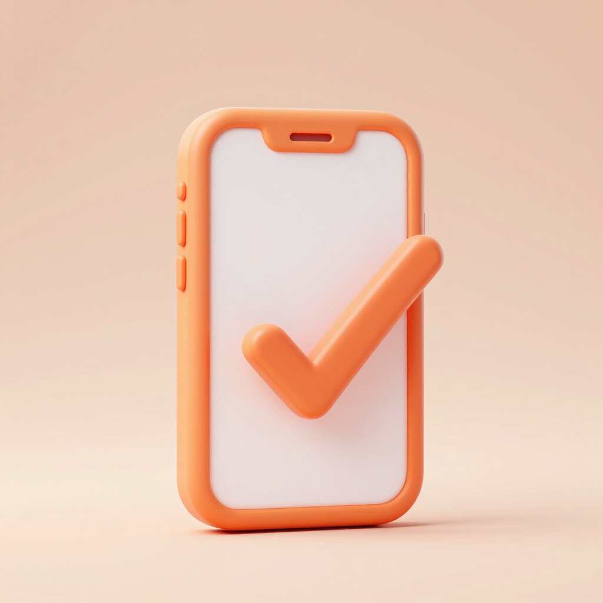
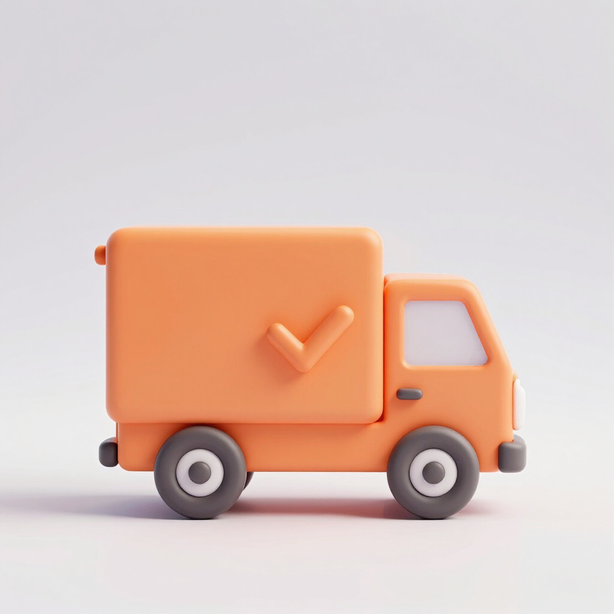
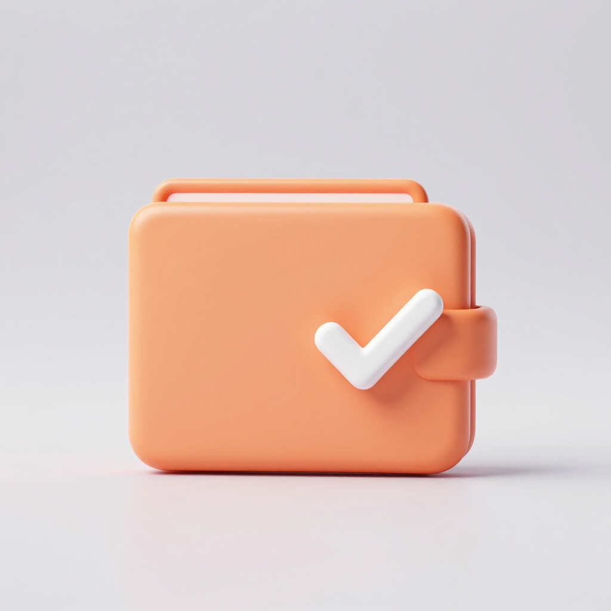
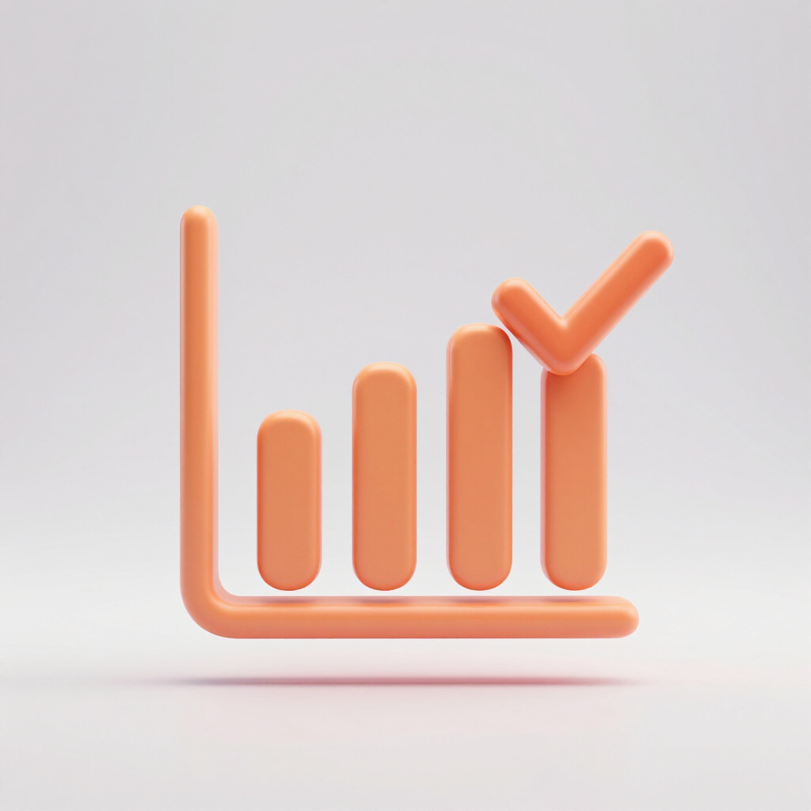

Reduced Wait Times
Eliminate long queues during peak hours by browsing and placing orders from your phone.
A comprehensive overview of the core functionalities and objectives of the Food Stall Pre-Order App.
A transparent outline of the technical and functional boundaries of the current project phase.
Our goals are focused on streamlining campus food services through technology, ensuring a seamless experience for both students and vendors.
A comprehensive breakdown of the total project cost, ensuring all development and operational requirements are met within the allocated budget.
| Item | Description | Cost (₱) |
|---|---|---|
| App Development Tools | IDE & Licenses | ₱0.00 |
| Cloud Hosting & Database | 3 Months | ₱2,000.00 |
| UI/UX Design Assets | Figma & Canva | ₱500.00 |
| Domain & SSL Certificate | Annual Certificate | ₱1,500.00 |
| Testing Devices | 5 Mobile Devices | ₱1,000.00 |
| Marketing & Promotion | QR Code Flyers | ₱500.00 |
| Contingency Fund | Unforeseen Costs | ₱1,000.00 |
| Total | ₱6,500.00 |
Empowering students and vendors through a seamless, efficient pre-ordering experience.

Eliminate long queues during peak hours by browsing and placing orders from your phone.

Minimize walk-away orders by allowing customers to schedule a pickup time before they arrive.

Choose from cash-on-pickup or e-wallet options for a seamless and secure payment process.

Gain real-time order notifications and sales reports to manage inventory and boost profits.
A 10-week execution plan from planning through launch, September to November 2026.
| Task | Description | Duration | Deadline |
|---|---|---|---|
| T1 | Requirements Gathering & Research | Week 1 | Sept 7, 2026 |
| T2 | UI/UX Wireframing & DB Design | Weeks 2–3 | Sept 21, 2026 |
| T3 | Core App & Dashboard Development | Weeks 4–7 | Oct 19, 2026 |
| T4 | Bug Fixing & QA / UAT Testing | Week 8 | Oct 26, 2026 |
| T5 | Deployment & Vendor Onboarding | Week 9 | Nov 2, 2026 |
| T6 | Post-Launch Feedback & Adjustments | Week 10 | Nov 9, 2026 |
Human expertise and technical tools powering the Food Stall Pre-Order App from design through deployment.